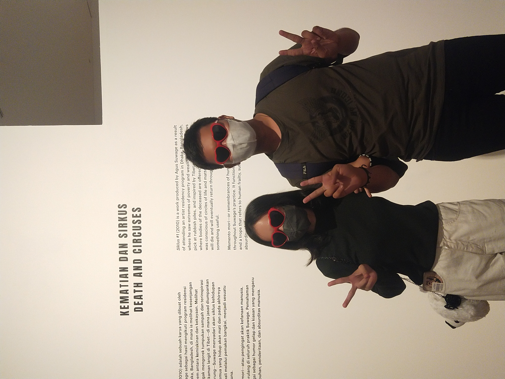

Happy 4th Anniversary!
❤️
Four amazing years have passed, and I still feel the same love and excitement when I’m with you as I did from the very beginning.

Here’s to many more years filled with love, laughter, and unforgettable moments together! 💖
Ketuk untuk interaksi
Aku temenin kamu terus bole?